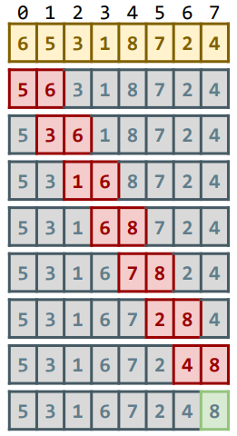
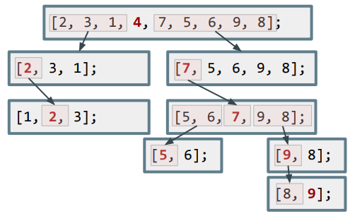
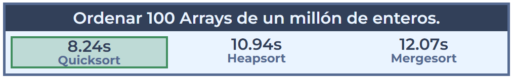
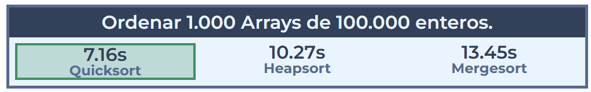
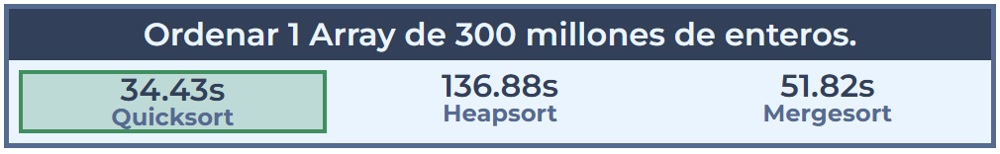

¿Qué es un algoritmo de ordenación?
→ Es una forma estructurada que indica cómo ordenar los elementos que hay dentro.
¿Son todos los algoritmos iguales?
→ No, algunos son más eficientes que otros.
Algoritmos 'in-place' y algoritmos 'no in-place'
Un algoritmo «no in-place» es un algoritmo que no puede realizarse sin utilizar un espacio adicional para guardar datos mientras se procesa. Por ejemplo, si se tiene una lista de números y se quiere ordenar utilizando un algoritmo «no in-place», se necesitaría un array adicional para almacenar los números mientras se van ordenando, ya que no puede realizar la operación de ordenación sin modificar los datos originales y, por lo tanto, necesita un lugar donde almacenarlos mientras los procesa.
En cambio, un algoritmo «in-place» es un algoritmo que puede realizar una operación sin necesidad de espacio adicional (puede procesar los datos directamente en el lugar donde se almacenan, sin necesidad de utilizar una estructura de datos adicional).
ACTIVIDAD. ¿Qué tipo de algoritmo es el método por Selección visto en el apartado anterior?
Los algoritmos «in-place» son más eficientes en términos de espacio, ya que no requieren espacio adicional para realizar la operación. Sin embargo, algunos algoritmos «no in-place» pueden ser más eficientes en términos de tiempo o pueden tener otras ventajas que los hagan más adecuados para ciertas tareas.
El método burbuja (Bubble Sort)
El algoritmo de la burbuja es uno de los métodos de ordenación más conocidos, y de los primeros en ser usados. Consiste en comparar pares de elementos adyacentes en un array, y si están desordenados, intercambiar las posiciones hasta que terminen todos ordenados.
En cada iteración se comprueban los elementos adyacentes, de este modo, el máximo lo acabaremos situando a la derecha del array. Seguiremos haciendo lo mismo para el resto del array, pero hasta una posición menos con cada iteracción.
El código Java para la ordenación burbuja, de forma ascendente:
int aux;
for (int i = 0; i < vector.length; i++) {
for (int j = 0; j < vector.length - i - 1; j++) {
//El valor máximo lo más a la derecha posible
if (vector[j] > vector[j + 1]) {
aux = vector[j];
vector[j] = vector[j + 1];
vector[j + 1] = aux;
}
}
}
En el siguiente ejemplo se puede observar un ejemplo de cómo se guarda en la última posición el valor máximo. Luego, se repetirá el proceso descartando mirar dicho elemento (recorriendo hasta length - 1), y así sucesivamente:

Supongamos que tenemos el siguiente array:
int vector[] = {5, 3, 8, 4, 2};El algoritmo realizará las siguientes comparaciones y cambios:
- Primera iteración (i = 0):
Compara 5 y 3, intercambia → {3, 5, 8, 4, 2}
Compara 5 y 8, no hace nada.
Compara 8 y 4, intercambia → {3, 5, 4, 8, 2}
Compara 8 y 2, intercambia → {3, 5, 4, 2, 8}
- Segunda iteración (i = 1):
Compara 3 y 5, no hace nada.
Compara 5 y 4, intercambia → {3, 4, 5, 2, 8}
Compara 5 y 2, intercambia → {3, 4, 2, 5, 8}
- Tercera iteración (i = 2):
Compara 3 y 4, no hace nada.
Compara 4 y 2, intercambia → {3, 2, 4, 5, 8}
- Cuarta iteración (i = 3):
Compara 3 y 2, intercambia → {2, 3, 4, 5, 8}
Al final del proceso, el array estará ordenado: {2, 3, 4, 5, 8}.
Algoritmo de ordenación rápida - Quicksort
Quicksort es uno de los algoritmos de ordenación más rápidos que existe, y hace uso de la estrategia divide y vencerás. Trabaja de la siguiente forma:
int nums[] = {4, 7, 5, 6, 2, 3, 1, 9, 8};
Elegimos como pivote el elemento de más a la izquierda. A partir de ahí, colocamos a su izquierda los menores, y a su derecha los mayores:

Repetimos el mismo proceso con las 2 sublistas de la izquierda y de la derecha; y así sucesivamente sobre cada una de las sublistas, mientras las sublistas tengan más de un elemento.
La eficiencia de este algoritmo depende de la posición en la que termine el pivote elegido. En el mejor caso, el pivote termina en el centro de la lista, dividiéndola en dos sublistas de igual tamaño. En el peor caso, el pivote termina en un extremo de la lista.
Ejemplo detallado de cómo ordenar este array: [4, 2, 7, 11, 1, 3, 10, 0, 9, 8, 6, 5] :
1. Seleccionamos un pivote: por ejemplo, el primer elemento de la lista, el 4 (podría ser cualquiera otra posición, incluso aleatoria).
2. Partimos la lista en dos sublistas: una con los elementos menores que 4 y otra con los elementos mayores que 4. La nueva lista se divide en dos sublistas, [2, 1, 3, 0] y [7, 11, 10, 9, 8, 6, 5].
3. Ordenamos cada sublista hasta que todos los elementos estén ordenados:
a. Ordenamos la sublista [2, 1, 3, 0] siguiendo los mismos pasos. Seleccionamos el primer elemento, 2, como pivote. Particionamos de nuevo la lista en [1, 0] y [3] y ordenamos re nuevo cada sublista hasta que todos los elementos estén ordenados.
b. Ordenamos la sublista [7, 11, 10, 9, 8, 6, 5] siguiendo los mismos pasos. Seleccionamos el primer elemento, 7, como pivote. Dividimos la lista en dos sublistas más [4, 6, 5] y [11, 10, 9, 8]. Continuamos ordenando cada sublista hasta que todos los elementos estén ordenados.
4. Una vez que todas las sublistas estén ordenadas, se combinan entre ellas para formar la lista completa ordenada: [0, 1, 2, 3, 4, 5, 6, 7, 8, 9, 10, 11].
Quicksort es un algoritmo «in-place», lo que significa que no requiere espacio adicional para ordenar los datos. Además, suele tener un rendimiento excepcional en la mayoría de los casos. Es especialmente adecuado en entornos con restricciones de espacio y en situaciones en las que se necesita un algoritmo rápido y eficiente para ordenar los datos. Sin embargo, es importante tener en cuenta que Quicksort no es un algoritmo estable y que puede tener un rendimiento peor en casos concretos, como cuando el pivote seleccionado es muchas veces el elemento más pequeño o más grande del conjunto de datos.
Otros algoritmos de ordenación
Existen otros algoritmos de ordenación que son igual de rápidos que Quicksort, incluso a veces mejorando el peor caso de Quicksort. Sin embargo, en la práctica Quicksort suele ser el mejor para arrays medianos o grandes. Entre los más conocidos están Mergesort y Heapsort.


